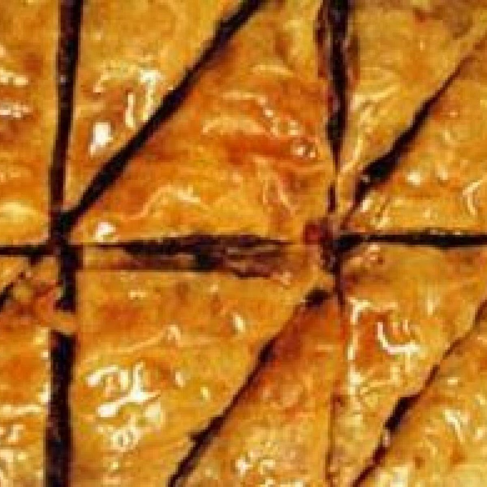

Baklava

Description:
Buttered thin dough baked with cream cheese in the middle and a lemon glaze on top.
Ingredients:
- philo dough
- butter
- lemon juice (fresh lemons are best)
- cream cheese
Steps:
- Butter a flat pan and layer philo dough flat in layers, buttering each successive layer
- Halfway through your philo dough spread a half pound to a full pound of cream cheese thinly across the entire layer
- Continue layering and buttering philo dough through the rest of the supply.
- Cut pieces to desired size, usually in a grid pattern then cut each square/rectangle in half diagonally.
- Refrigerate for 20 minutes.
- Bake for 15 minutes at 375F degrees until golden brown on top.
- While baking, prepare the glaze. Start boiling 1 cup of water with 2 cups sugar mixed in.
- Prepare a cup of cold water and keep refrigerated to test glaze.
- Squeeze one lemon into a cup.
- Stir sugar water until it thickens and slightly darkens.
- Test Glaze readiness by dripping into cold water cup. When it crystalizes on top without dropping completely to the bottom it is ready.
- Keep the glaze warm while waiting for baklava to finish browning. When brown, stir the lemon juice into the glaze and pour onto the warm baklava right out of the oven.
- Let cool (or don't!) and enjoy.